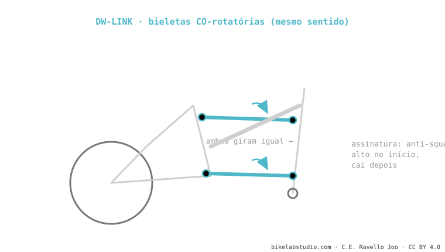

O DW-link (de Dave Weagle) usa duas bieletas curtas que giram no mesmo sentido (co-rotatórias). Sua assinatura é um anti-squat alto e estável na zona de sag que cai depois: por isso pedala firme sem necessidade de bloqueio e com pouco pedal kickback. Usam Ibis e Pivot. Não é o mesmo que o VPP, que gira as bieletas ao contrário. É um dos sistemas de dupla bieleta.
Se sua bike sobe como se tivesse bloqueio ativado mas desce solta, provavelmente é um DW-link. E a chave de tudo está no sentido em que giram duas bieletas.

Dave Weagle projetou o DW-link em torno de uma ideia: o anti-squat tem que ser alto onde você pedala e baixo onde não pedala. Por isso a curva começa com um "platô" alto perto do sag (firmeza ao pedalar) e depois cai ao afundar (para que o kickback não incomode no fundo). As duas bieletas co-rotatórias são a forma de conseguir esse movimento do centro instantâneo.
O sentido de giro das bieletas: DW-link co-rotatórias (mesmo sentido), VPP contra-rotatórias (opostas). Muda anti-squat e axle path.
Anti-squat alto e estável no sag que cai depois: firme ao pedalar, solto no fundo, sem bloqueio.
Diga o modelo e dizemos sua curva e o setup que a aproveita. Fale conosco pelo WhatsApp
© 2026 BikeLab Studio. Conteúdo sob CC BY 4.0: você pode copiar, traduzir e publicar, inclusive com fins comerciais. A citação é obrigatória. Sem atribuição, a licença é revogada automaticamente (CC BY 4.0, §6.a) e o uso passa a ser violação de direitos autorais: solicitamos a retirada do conteúdo e sua desindexação. · Design e propriedade: Carlos Ravello Joo